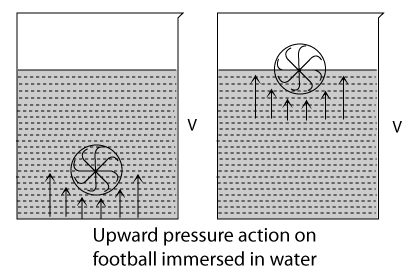
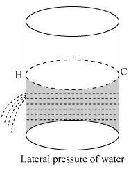
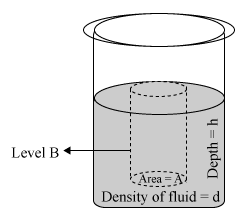
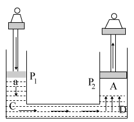
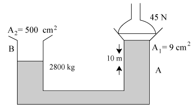
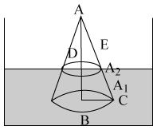
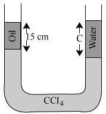

Fluid pressure
The pressure exerted by a fluid is known as fluid pressure.
A fluid exerts pressure in all possible directions. The types of pressure a fluid exerts are vertically downwards, vertically upwards and on the sides of a container. The pressure of the fluid acting sideways is known as its 'lateral pressure'.
Types of fluid pressure
A fluid exerts three types of pressure
-
downward pressure
-
upward pressure
-
lateral pressure
Fluid Pressure - Downward Pressure
A fluid taken in a vessel exerts pressure on the bottom of the vessel in which it is kept, this pressure is known as downward pressure
Fluid Pressure - Upward Pressure
Take a foot ball and immerse it in water in a vessel (V) and leave it. The ball immediately comes up and floats on water. This shows that water (or fluid) exerts pressure in the upward direction.

Fluid Pressure - Lateral Pressure
Take a long cylindrical vessel containing water and make a hole (H) on its wall as shown in the figure. The water comes out with a speed and falls at certain distance. This proves that liquid exerts lateral pressure.

Mathematical expression for fluid pressure
A beaker is filled with fluid having density 'd'.
Imagine a cylindrical column of liquid with a horizontal area 'A' at a level of 'B' and at a depth 'h' below the surface of the fluid.

Volume of the imaginary column of fluid.
V = Area of cross section \( \times \) height
V = A \( \times \) h ..... (1)
Thrust on the cylindrical column = Weight of the fluid
= m \( \times \) g
= \( (V \times d) \times g \ \ \ (\therefore \ m = V \times d) \)
Thrust = \( (A \times h) \times d \times g \)
[from equation (1)]
But, Pressure = \( \frac{Thrust}{Area} \)
\( \therefore \ Pressure (P) = \frac{Ahdg}{A} = hdg \)
\( \therefore \) Pressure due to a fluid column = P = hdg.
Total pressure at a point in a liquid
Total pressure at a point (B) = Atmospheric pressure on liquid surface \( 'P_A' \) + in a liquid at a depth 'X' pressure due to liquid column (fluid pressure) above the point 'B'.
Total pressure = Atmospheric pressure + fluid pressure = PA + xdg
Laws of Pressure of a Liquid at Rest
The following laws of liquid pressure can be easily verified using a simple manometer.
-
1. Pressure about a point in a liquid is the same in all directions.
-
Pressure is same at all points in a horizontal plane.
-
Pressure at a point in a fluid at rest depends on the depth h (i.e., P oc h), but not on any horizontal dimension of the fluid or its container
-
Pressure at a constant depth in different liquids is proportional to the density of the liquid (i.e., \( P \propo r \) ).
-
A liquid seeks its own level.
Atmospheric pressure
The thick blanket of air covering the entire earth's surface is called atmosphere. The pressure exerted by these atmospheric gases on its surroundings and on the surface of the earth is known as atmospheric pressure.
The instrument used for measuring atmospheric pressure is known as barometer. 1 atm is the pressure exerted by a vertical column of mercury of 76 cm (or 760 tam) height.
\( 1 \ atm = 76 \ cm \times 13.6 \ g \ cm^{-3} \times 9.8 \ m \ s^{-2} \) (using 'hpg' for pressure exerted by a liquid)
\( = 0.76 m \times 13.6 \ 10^3 \ kg \ m^{-3} \times 9.8 \ m \ s^{-2} = 101292.8 \ N \ m^{-2} \ or \ Pa = 1.013 \times 10^5 \ Pa \)
Other units usually used in measurement of pressure are 'torr' and 'bar'
1 torr = 1 mm of Hg, \( 1 \ bar = 10^5 \ Pa \)
or \( 1 \ atmosphere = 10^5 Pa \)
Pascal law - Transmission of fluid pressure
It states : for a confined liquid at rest, pressure applied at any point in the liquid is transmitted equally and undiminished in all directions throughout the liquid. This law is useful in designing instruments like Bramah press, hydraulic press etc. It is the principle in the development of hydraulic brakes, that are used in automobiles. This law is also known as the law of transmission of fluid pressure.
Hydraulic press or Brahmah press
-
It is used to compress bales of cotton and straw.
-
It is used to compress oil seeds for getting oil.
It is consists of a cylinder that contains two pistons, one smaller than the other. The cylinder is filled with a fluid. A force applied to the smaller piston is transferred through the fluid to the larger piston.

Let pressure acting on smaller piston be \( P_1 = \frac{W_1}{a} \) and on larger piston be \( P_2 = \frac{W_2}{A} \) since pressure is transmitted equally in all the directions
\( P_1 = P_2 = \frac{W_1}{a} = \frac{W_2}{A} \ \Rightarrow \ W_2 = \frac{A}{a} W_1 \)
\( \therefore \) "In a hydraulic press we can multiply a small thrust applied into a big thrust, by making the ratio of area of cross sections very large".
upthrust or buoyant force
when a body is immersed in a fluid completely or partly, the body experiences an upward force by the fluid. This upward force exerted by the fluid or the immersed body is known as 'upthrust' or 'buoyant force'. The property of a fluid to exert buoyant force on an object immersed in it is known as 'buoyancy'.
Archimedes' Principle
When a body is partially or completely immersed in a fluid at rest, it experience an upthrust which is equal to the weight of the fluid displaced by it.
Due to the upthrust, acting on the body, it apparently loses a part of its weight and the apparent loss of weight is equal to the upthrust.
Thus, for a body either partially or completely immersed in a fluid, upthrust = weight of the fluid displaced = apparent loss of weight of the body.
Relative density
Often density of a substance is compared with the density of water at \( 4^{\circ}\ C \) . This ratio is called the relative density. Thus "relative density of a substance is defined as ratio of density of the substance to density of water at \( 4^{\circ}\ C \) "
Mathematically, relative density (R.D) = \( \frac{\text{Density of substance}}{\text{Density of water at} 4^{\circ}\ C} \)
Relative density of a solid substance = \( \frac{\text{ Weight of the solid in air}}{ \text{ Apparent loss of weight of the body in water}} \)
Relative density of a solid soluble in water = \( \frac{\text{ Weight of the solid in air}}{ \text{ Apparent loss of weight of the body in water}} \times \text{(relative density of the liquid)} \)
Relative density of a liquid = \( \frac{ \text{Apparent loss of weight of the body in a liquid}}{\text{ ( Apparent loss of weight of the body in water )}} \)
Laws of floatation
-
The weight of a floating body in a fluid is equal to the weight of the fluid displaced by the body.
-
The centre of gravity of the floating body and the centre of buoyancy are in the same vertical line.
Characteristics of a floating body
The following are the characteristics of a floating body in a fluid.
-
Weight of a floating body = upthrust or buoyant force = Apparent loss of weight of the body in the fluid.
-
The net force acting on a body floating in a fluid is zero.
-
The apparent weight and apparent density of a body floating in a fluid is zero.
Solved examples
Example 1:
A cylinder of certain mass is held in vertical position. If the height of the cylinder is 10 cm and radius of cross-section is 4 cm such that the pressure acting on its bottom surface is \( 21560 \ N \ m^{-2} \) , then find the mass of the cylinder?
Solution:
Pressure = \( 21560 \ N \ m^{-2} \) , radius of cross section = 4 cm
\( \therefore \) Area of cross-section = \( \pi r^2 = \pi (16 \times 10^{-4}) m^2 \)
\( \begin{align} Pressure = \frac{weight}{ \text{Area of crosssection}} \\\\[3pt]
21560 = \frac{m(9.8)}{\pi (16 \times 10^{-4})} \\\\[3pt]
m = \frac{21560 \times 16 \times10^{-4} \times \pi}{9.8} = 1106 \times 10^{-4} \times 100 = 11.06 kg \end{align} \)
Example 2:
ratio of height of a mercury column in a barometer at a place to the height of the liquid column at the same place are 1 : 4. Find the density of the liquid.
Solution:
Since Atmospheric pressure is same
Pressure due to mercury column = Pressure due to height of the liquid column
\( \begin{align} P_1 = P_2 \\\\[3pt]
h_1d_1g = h_2d_2g \\\\[3pt]
\frac{h_1}{h_2} = \frac{d_2}{d_1} \\\\[3pt]
h_1 : h_2 = 1 : 4 \\\\[3pt]
\therefore \ \frac{1}{4} = \frac{d_2}{13.6} \ \Rightarrow \ \frac{13.6}{4} = 3.4 \ g \ cm^{-3} \end{align} \)
Example 3:
An alloy made of two metals Au and Cu weighs 200 gwt in air and 160 gwt in water. If densities of metals Au and Cu are \( 20 \ g \ cm^{-3} \) and \( 4 \ g \ cm^{-3} \) , then find the percentage of mass of each metal present.
Solution:
Mass of alloy in air = 200 gwt, Mass of alloy in water = 160 gwt
Apparent loss in weight of alloy = 200 - 160 = 40 gwt
\( \therefore \) Weight of water displaced = 120 gwt
Volume of water displaced = \( \frac{W}{d} = \frac{40}{1} = 40 \ cm^3 \)
Let mass of metal Au be x g and mass of metal Cu is (200 - x) g, V = \( 40 \ cm^3 \)
\( \therefore \ V_{Au} = \frac{x}{20}; \ V_{Cu} = \frac{200 - x}{4} \)
Totaal volume =
\( \begin{align} V_{Au} + V_{Cu} \\\\[3pt]
40 = \frac{x}{20} + \frac{200 - x}{4} \\\\[3pt]
\Rightarrow 40 = \frac{x + 1000 - 5x}{20} \\\\[3pt]
\Rightarrow \ 800 = x + 1000 - 5x \\\\[3pt]
\Rightarrow 4x = 200 \\\\[3pt]
\Rightarrow x = 50 \\\\[3pt]
m_{Au} = 50 g; \ m_{Cu} = (200 - 50) = 150g \end{align} \)
Mass percentage of \( Au = \frac{50}{200} \times 100 = 25 \% \)
Mass percentage of \( Cu = \frac{150}{200} \times 100 = 75 \% \)
Example 4:
A hollow metal of mass 180.6 g contains cavity of volume \( 2.5 \ cm^3 \) . This metal when placed in water displaces 24 cc of water. Find the specific gravity of metal.
Solution:
Let density of metal be \( \rho \)
Weight of metal = 180.6 g
Actual volume of metal = \( \left ( \frac{180.6}{\rho} \right ) cm^3 \)
Volume of cavity = \( 2.5 \ cm^3 \)
Volume of ornament = volume of liquid displacement (d) = \( 24 \ cm^3 \)
Volume of cavity = volume of displaced - actual volume
\( \begin{align} 2.5 = 24 - \frac{180.6}{\rho} \ \Rightarrow \ \frac{180.6}{\rho} = 24 - 2.5 \\\\[3pt]
\frac{180.6}{\rho} = 21.5 \\\\[3pt]
\rho = 8.4 \ cm^{-3} \end{align} \)
\( \therefore \) Specific gravity of metal = 8.4
Example 5:
A block of wood floats in a liquid of density \( 0.8 \ g \ cm^3 \) with one fourth of its volume submerged. In oil the block floats with 60% of its volume submerged. Find the density of
Solution:
-
For floating bodies,
Weight of floating body = upthrust due to liquid
\( \begin{align} V \times \rho_{wood} = V_{immersed} \times \rho_{liquid} \\\\[3pt]
V \ \rho_{wood} = \frac{1}{4} V(0.8) \\\\[3pt]
\rho_{wood} = 0.2 \ g \ cm^{-3} \ (or) 200 \ kg \ m^{-3} \end{align} \)
-
For floating body in oil,
Weight of floating body = upthrust due to oil
\( \begin{align} V \times \rho_{wood} = V_{immersed} \times \rho_{oil} \\\\[3pt]
V \times 200 = 0.6 \ V \rho_{oil} \\\\[3pt]
(\because 60 \% \ of \ volume = 0.6 \ v) \\\\[3pt]
\rho_{oil} = \frac{200}{0.6} \\\\[3pt]
\therefore \rho_{oil} = 333.3 \ kgm^{-3} \end{align} \)
Example 6:
In the arrangement shown below, a block of 2800 kg is in equilibrium on applying a fore, of 45 N. Find the density of the liquid?

Solution:
The total pressure acting on side \( A = \frac{F}{A_1} + h \ \rho g = \frac{45}{9 \times 10^{-4}} + (10 \times \rho \times 9.8)Pg \)
Pressure acting on side \( B = \frac{2800 \times 9.8}{500 \times 10^{-4}} Pa \)
According to Pascal's law,
Pressure acting on side A = Pressure at side B
\( \begin{align} 5 \times 10^4 + 98 \rho = \frac{28}{5} \times 10^4 \times 9.8 \\\\[3pt]
98 \rho = 5.6 \times 10^4 \times 9.8 - 5 \times 10^4 \\\\[3pt]
98 \rho = (54.88 - 5) \times 10^4 \\\\[3pt]
98 \rho = 49.88 \times 10^4 \\\\[3pt]
\rho = 0.5089 \times 10^4 \ kg \ m^{-3} = 5089 \ kg \ m^{-3} \end{align} \)
Example 7:
what depth in an ocean will a bubble of air have one fourth the volume it will have on reaching the surface? (Atmospheric pressure = 76 cm of Hg and density of \( Hg = 13.6 \ gcm^{-3} \)
Solution:
Let volume of bubble on the surface of water be V \( V_1 = V \)
Volume of bubble inside the water \( V_2 = \frac{V}{4} \)
Pressure \( P_1 \) at surface = 76 cm of Hg
Let depth of bubble inside = h cm
\( \therefore \) Pressure of bubble inside water = \( \left ( 76 + \frac{h}{13.6} \right) cm \ of \ Hg \)
Given, \( P_1 \) = 76 cm of Hg, \( V_1 \) = V
\( P_2 = \left ( 76 + \frac{h}{13.6} \right) cm \ of \ Hg, \ V_2 = \frac{V}{4} \)
According to Boyle's law,
\( \begin{align} P_1 V_1 = P_2 V_2 \\\\[3pt]
(76)V = \left ( 76 + \frac{h}{13.6} \right ) \left ( \frac{V}{4} \right ) \\\\[3pt]
76 = \frac{76}{4} + \frac{h}{13.6 \times 4 } \\\\[3pt]
\frac{h}{13.6 \times 4 } = 57 \\\\[3pt]
\therefore h = 3100.8 \ cm \end{align} \)
Example 8:
A metal cube is found to float in a liquid of density \( 2 \ g \ cm^{-3} \) with \( \frac{1}{2} \ cm \) of its vertical Side above the liquid. On placing a weight of 144 g over its top, it just submerges in the liquid, Find the specific gravity of the metal cube?
Solution:
Let 'a' be the side of cube.
Case(i) Volume submerged (V) = \( a^2 \left ( a - \frac{1}{2} \right ) cm \)
For floating body,
Upthrust = weight of the cube
\( \begin{align} V_{liquid} \rho_{liquid} = V_{cube} \rho_{cube} \\\\[3pt]
a^2 \left ( a - \frac{1}{2} \right ) (2) = a^3 \ \rho_{metal} \\\\[3pt]
\rho_{metal} = \frac{2}{a} \left ( a - \frac{1}{2} \right ) = \frac{(2a - 1)}{a} \ g \ cm^{-3} \end{align} \)
Case(ii) When cube is fully submerged,
\( \begin{align} a^3(2)g = a^3 \ \rho_{metal} g + 144 g \\\\[3pt]
\Rightarrow a^3(2) = a^3 \left( \frac{2a - 1}{a} \right) + 144 \\\\[3pt]
2a^3 - 2a^3 + a^2 = 144 \\\\[3pt]
a = \sqrt{144} = 12 \ cm \\\\[3pt]
\therefore \ \rho_{metal} = \frac{(2a - 1)}{a} = \frac{(2)(12) - 1}{12} = \frac{24 - 1}{12} = \frac{23}{12} \ g \ cm^{-3} \end{align} \)
Specific gravity of metal cube = \( \frac{23}{12} \)
Example 9:
A cone of height 16 cm and volume \( 2948 \ cm^3 \) floats in a liquid of density \( 3.2 \ g \ cm^{-3} \) such that its base lies below the surface of the liquid. If the area of cross section of conical region above the liquid surface is \( 16 \ cm^3 \) , find the density of the cone.

Solution:
Volume of cone = \( \frac{1}{3} \pi r^2 h = \frac{1}{3} Ah_1 \)
\( \begin{align} \Rightarrow \ 2048 = \frac{1}{2} A_1 (16) \\\\[3pt]
A_1 = 384 \ cm^2 \end{align} \)
Volume of conical portion above the surface of liquid = \( \frac{1}{3} A_2 h_2 = \frac{1}{3} \times 6 \times h_2 \)
Consider \( \triangle{ABC} \) and \( \triangle{ADE} \) they are similar,
Hence, \( \frac{AB}{AD} = \frac{BC}{DE} \)
\( \begin{align} \frac{h_1}{h_2} = \frac{r_1}{r_2} \ \ \ \ (\because \ AB = h_1, \ AD = h_2) \\\\[3pt]
But, \ \frac{r_1}{r_2} = \sqrt{\frac{\pi \ r_1^2}{\pi r_2^2}} \\\\[3pt]
\therefore \frac{r_1}{r_2} = \sqrt{ \frac{A_1}{A_2}} \\\\[3pt]
\therefore \ \sqrt{\frac{A_1}{A_2}} = \frac{h_1}{h_2} \\\\[3pt]
\sqrt{\frac{384}{6}} = \frac{16}{h_2} \ \Rightarrow \ \frac{16}{h_2} \ \Rightarrow \ h_2 = 2 \ cm \\\\[3pt]
\therefore \ V_2 = \frac{1}{3} \times A_2 h_2 \\\\[3pt]
= \frac{1}{3} \times 6 \times 2 = 4 \ cm^3 \\\\[3pt]
V_{immersed} = V_1 - V_2 = 2048 - 4 = 2044 \ cm^3 \end{align} \)
According to law of flotation,
Weight of floating body = upthrust
\( \begin{align} V_0 d_0 g = V_{imm} d_l g \\\\[3pt]
2048 \ d_0 = 2044 \times 32 \\\\[3pt]
d_0 = 3.193 \ g \ cm^{-3} \end{align} \)
Example 10:
A 'U' tube contains oil, carbon tetrachloride and water as shown in the figure. The density of oil is \( 0.8 \ g \ cm^{-3} \) and that of carbon tetrachloride is \( 1.6 \ g \ cm^{-3} \) . If oil and water surfaces are at the same level, find the height of the water column.

Solution:
\( \begin{align} 5(0.8) g + (h - 15) 1.6 g = h_1 g + (h - h_1) 1.6 g \\\\[3pt]
1.6 h + 12 - 24 = h_1 + 1.6 h - 1.6 h_1 \\\\[3pt]
- 12 = - 0.6 \ h_1 \\\\[3pt]
h_1 = \frac{120}{0.6} = 20 \ cm \end{align} \)